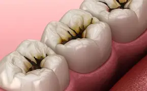
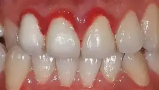
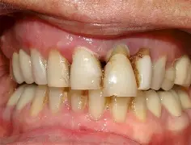
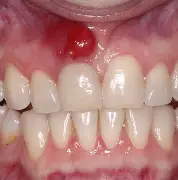
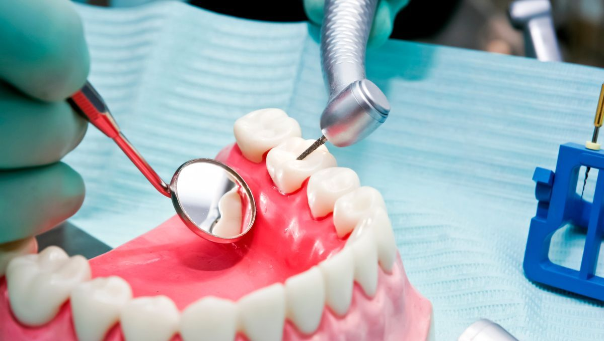
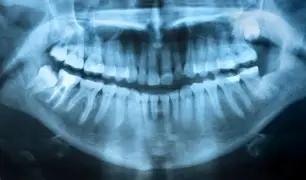
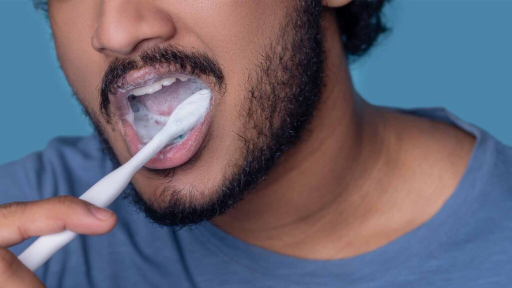

Cuide de seus dentes e gengivas!







Como posso ter uma Saúde Bucal adequada?
A base para a prevenção começa com uma higiene oral adequada,
escovando os dentes pelo menos duas vezes ao dia com uma pasta de dentes com flúor. O uso do fio dental é igualmente importante, pois ajuda a limpar entre os dentes, onde a escovação nem sempre alcança.
Por favor, utilize ambos para seu próprio bem.